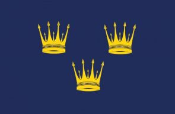

Useful Links

Welcome to the Boherlahan Dualla GAA club website. You can use this website to keep up to date on upcoming events and results, browse the gallery, read up on the history of the club, to get in contact with us and have your voice heard.